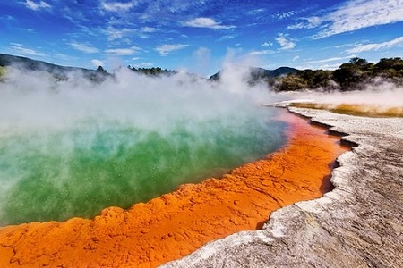

Rotorua
Rotorua es una ciudad conocida por sus piletas de barro burbujeante,
géiseres y aguas termales naturales, además de mostrar la fascinante
cultura maorí.
Desde arroyos de agua cristalina y bosques mágicos a épicos senderos de
ciclismo y piletas de barro termal, Rotorua lo tiene todo. La ciudad
ofrece una gran variedad de atracciones y experiencias para todos,
desde los que buscan la aventura hasta los que solo quieren relajarse.
Ubicada dentro del Cinturón de Fuego del Pacífico, Rotorua es un paraíso
geotermal con piletas de barro burbujeante, nubes de vapor y aguas
termales naturales ideales para bañarse y relajarse.
